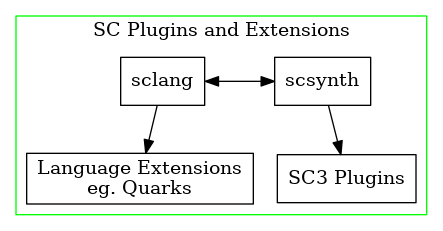
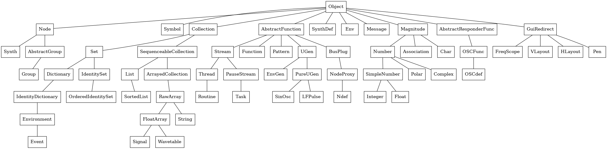
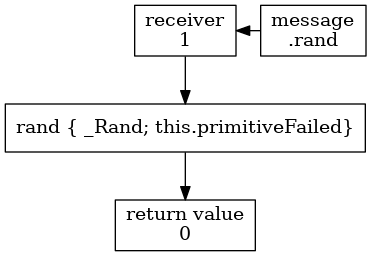

Creating coding meetup - week 1
Table of Contents
1 SuperCollider
1.1 Homepage of SC3
1.1.1 The SuperCollider Book
You can download all the code examples.
2 SC3 features
2.1 Language (sclang) / Server (scsynth) / IDE
SC3 has 2 major parts: the language side or sclang and the server side or scsynth. Language side is where the user writes the program and server side is where the sound synthesis happens. SC IDE is an application established from version 3.6 and on which enclose both sclang and scsynth in a handy IDE. See Client vs Server help file online.

Figure 1: SuperCollider application

Language and server side extensions: https://github.com/supercollider/sc3-plugins
Platform.userExtensionDir // show user's extension path
2.2 Class hierarchy tree
SC3 has an Object Oriented language (sclang) with features from functional languages, and a C-like syntax.
All entities are objects, which inherit from the root class Object.

2.3 Basic elements of SC language
- Classes: Begins with an uppercase. (eg.
Class,Array) - Methods: Begins with a lowercase. (eg.
.post;.mirror;neg(1);) - Variables: No need to predefine the type of a variable. Three types of variables: interpreter, local and environmental, as follows:
- Every lowercase single letter. (eg.
a;d=9;f={1+1}; ) - Use of var identifier. (
var nameOfVariable;var rho=0.05;) - Environmental variables starting with a tidle
~and lowercase. (eg.~theta=pi;)
- Every lowercase single letter. (eg.
- Arguments: They start with a lowercase and they follow the special keyword
arg,
or just included in | | . (eg. arg a=0, beta; or |alpha=2| )
- Symbols: Symbols have a unique representation and they start with a backslash
\,
or included in single quotes. (eg. \alphabeta; 'gamma'; ).
- Functions: A function consists within curly brackets
{ }. (eg.{|a| a.not;}) - Collections: Many types of collections. (eg.
[a,1,2];List[0,1]) - Strings: Alphanumeric sequences in double-quotes.
2.4 sclang basics
- Receivers, messages, arguments
- Collections
- Functions
- Strings
- Symbols
2.4.1 Precedence
The order of execution of binary operators is from left to right. No operation (+,-,*,/,**) has any privilege.
1+2*3 1*2+3 1+2**2 // 2**n <=> 2 to the power of n 1**2+1
2.4.2 Messages
[1,2,3,4].reverse.mirror; // precedence applies also for messages [1,2,3,4].mirror.reverse; [1.23, 1.256, 12.34].round [1.23, 1.256, 12.34].round(0.1) // 0.1 is an argument
2.4.3 Methods
1.rand

Figure 4: Method flow in SC3, image adopted by SuperCollider Book, Chapter 5 by I. Zannos.
2.4.4 Collections
[1, 2, 3, 4].class List[1, 2, 3, 4] Array.with(2 , \three , " four " ) ; Array.geom(100 ,1e5 ,2).mirror.plot ; [1 ,2 ,3 ,4].put ([0 ,1].choose, nil ) ; List[1 , 2 , 3 , 4].collect({ arg item , i ; item + 10 }) ; (1..4) collect: [ \a , \b , _ ]
2.4.5 Strings
"this is a string" "this is a string" == "this is a string" "this is a string" === "this is a string" // not identical (see Symbols below)
2.4.6 Symbols
\thisIsASymbol 'thisIsASymbol' // different \thisIsASymbol == 'thisIsASymbol' \thisIsASymbol === 'thisIsASymbol'
2.5 Control Structures
Few examples for writing an if statement, a case statement, a do loop and a while loop. See Control Structures help file.
// if ( expr , trueFunc , falseFunc ) ; if(10.rand > 5 , { " true " } , { " false " }) ; if(10.isPrime) { " true " } { " false " }; // alternative syntax // do ( collection , function ) // or collection . do ( function ) 10.do{ arg i ; i.postln ; }; (2 ,4..20) do: { | item , i | " item = ".post ; item.postln ; " i = ".post ; i.postln }; do(10 , { | i | i . post ; }) ; // all these are alternative syntaxes // case ( i = 10. rand ; case { i < 3 } { " small " } { (i > 3) &&( i < 7) } { " medium " } { i > 7 } { " big " }; ) // while ( i =0; while ( { i < 5 } , { i = i + 1; i.post ; } ) ; )
3 Server side
Start your sound engine.
s.boot; // start your sound engine s.volume.gui; // create a gui slider to control the volume s.meter; // create a gui with input/output levels
3.1 UGen
The UGen class provide language side representation of the unit generators 3 available on the server. Their language description is similar to class description, although their are actually defined as plug-ins, written in C++ code. A unit generator can generate or modify audio signals. They are capable to input/output floating point data, in audio-rate ( *ar ), control-rate ( *kr ) and constant-rate ( *ir ). All calculations take place on the server.
Examples below were adopted from the SuperCollider Book Chapter 1 by David Michael Cottle. Go to SuperCollider Book download the code.zip and open the file Ch1code.scd in the Ch 1 Tutorial.
- To execute the code
Ctrl + RETorCMD + RET.
{LFNoise1.ar}.play // play a series of random numbers
// by default the left channel is the
{LFNoise1.ar(10000)}.plot // plot those numbers
{LFNoise1.ar(10000)}.scope // play and show on a scope
play({SinOsc.ar(LFNoise1.kr(7, mul: 600, add: 1000), 0.2)}) // Ctrl + . or CMD + . to stop sound
play({RLPF.ar(Dust.ar([9, 11]), LFNoise1.ar(1/[3, 4], 1500, 1600), 0.02)})
Nested example:
(
play(
{
CombN.ar(
SinOsc.ar(
midicps(
LFNoise0.ar(2, 18,
LFSaw.ar([5, 5.123], 0, 3, 80)
)
),
0, 0.4),
1, 0.3, 2)
}
)
)